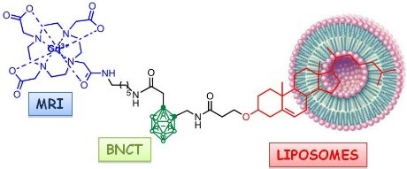

In this study the synthesis and characterization of a new dual, imaging and therapeutic,
agent is proposed with the aim of improving the efficacy of Boron Neutron Capture Therapy (BNCT)
in cancer treatment. The agent (Gd-B-AC01) consists of a carborane unit (ten boron atoms)
bearing a cholesterol unit on one side (to pursue the incorporation into the liposome bi-layer)
and a Gd(III)/1,4,7,10-tetraazacyclododecane
monoamide complex on the other side (as a MRI reporter to attain the quantification of the B/Gd concentration). In order to endow
the BNCT agent with specific delivery properties, the liposome embedded
with the MRI/BNCT dual probes has been functionalized with a pegylated phospholipid containing a folic acid residue at the end of
the PEG chain. The vector allows the binding of the liposome to folate receptors that are overexpressed in many tumor types, and in
particular, in human ovarian cancer cells (IGROV-1).

An in vitro test on IGROV-1 cells demonstrated that Gd-B-AC01 loaded liposomes are efficient carriers for
the delivery of the MRI/BNCT probes to the tumor cells. Finally, the BNCT treatment of IGROV-1 cells
showed that the number of surviving cells was markedly smaller when the cells were irradiated after
internalization of the folate-targeted GdB10-AC01/liposomes.
D. Alberti et al, Org. Biomol. Chem., 2014, 12, 2457–2467